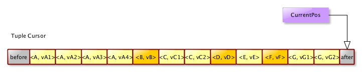

Mavibot 1.0
Downloads
Getting Started
Documentation
Support
Community
About Apache
4 - Mavibot B-tree operations
We will now list all the possible operations that can be applied on a B-tree. But first, let us understand the Cursor interface, as it is used for navigating a B-tree using various types of browse operations.
4.1 The Cursor interface
All the browse operations will return a Cursor instance. A Cursor allows navigating forward and backward on a B-tree. It starts at a specific position, and can be moved to a specific position too. The default position for a Cursor is before the very first element of the B-tree
Here is the B-tree sample we will use for the following examples :

4.1.1 Cursor position management
4.1.1.1 afterLast
Moves the current position after the last element (last key and last value). The following schema shows the new position of the pointer after having called the afterLast() method :

As we can see, we are not pointing at any key.
4.1.1.2 beforeFirst
Moves the current position before the first element (first key and first value). The following schema shows the new position of the pointer after having called the beforeFirst() method :
In this case also cursor is not stationed at any key.
4.1.2 Cursor operations
When a cursor is used to browse Tuples it may return many tuples with the same key but different value, when used to browse keys a single tuple will be returned for each key with the value of the key (when multiple values are present only the first value will be returned).
4.1.2.1 hasNext
Tells if there is a next available tuple. This will always be true if we are before the first tuple, and always false if we are on the last tuple or after the last tuple. The following picture shows the returned value for calls in various cases :
4.1.2.2 hasPrev
Returns true if there is a tuple available before the current tuple. The following picture shows the returned value for calls in various cases :
4.1.2.3 next
Moves to the next value of the current key or to the next key if all the values of the current key have been processed, and return the associated tuple.
4.1.2.4 prev
Moves to the previous value of the current key or to the previous key if all the values of the current key have been processed, and return the associated tuple.
4.2 Browse Operations
Now that we know what a Cursor is about, we can describe the various browse operations that can be applied on a B-tree.
4.2.1 BTree.browse()
This method returns a cursor with the position set before the first element of the B-tree, for the current revision. It returns a TupleCursor that contain the tuples <key,value> present in the B-tree.
Assuming you have an existing B-tree, using this method is quite straigthforward. Here is an example with a persisted B-tree :
// Create a RecordManager that will contain the B-tree
RecordManager recordManager = new RecordManager( "Test.db" );
// Create a B-tree to play with
BTree<Long, String> btree = recordManager.addBTree( "test", LongSerializer.INSTANCE, StringSerializer.INSTANCE, true );
// Inject some data
btree.insert( 1L, "1" );
btree.insert( 4L, "4" );
btree.insert( 2L, "2" );
btree.insert( 3L, "3" );
btree.insert( 5L, "5" );
// Create the cursor
TupleCursor<Long, String> cursor = btree.browse();
// Set the cursor at the beginning of the BTree
cursor.beforeFirst();
// Get the tuples
// Create the cursor
TupleCursor<Long, String> cursor = btree.browse();
// Move forward
while ( cursor.hasNext() )
{
Tuple<Long, String> tuple = cursor.next();
System.out.println( tuple );
}
...
will produce this output :
<1,1>
<2,2>
<3,3>
<4,4>
<5,5>
4.2.2 BTree.browse( long )
This method returns a cursor with the position set before the first element of the B-tree, for the given revision.
Here, the big difference is that you can fetch some data from an older revision - assuming this revision is still present, of course -.
It returns a TupleCursor that contain the tuples <key,value> present in the B-tree.
You can use the exact same code than for the browse() method, except that you have to pass the version you want to browse.
4.2.3 BTree.browseFrom( K key )
This method returns a cursor with the position set before the given key of the B-tree. If the key does not exist, the cursor will be set to the closest lower value (or upper value if it’s lower than the lowest value)
It returns a TupleCursor that contain the tuples <key,value> present in the B-tree.
You can use the exact same code than for the browse() method. Here is an example, where we start after the latest present key :
// Inject some data
for ( long i = 0; i <= 1000L; i += 2 )
{
btree.insert( i, Long.toString( i ) );
}
// Create the cursor
TupleCursor<Long, String> cursor = btree.browseFrom( 1500L );
assertFalse( cursor.hasNext() );
assertTrue( cursor.hasPrev() );
assertEquals( 1000L, cursor.prev().getKey().longValue() );
4.2.4 BTree.browseFrom( long revision, K key )
This method can be used when one want to browse a B-tree starting from a given key, for a specific revision of a B-tree. The only difference with the BTree.browseFrom( K ) method is the B-tree revision which is provided.
4.3 Contains Operations
We have a couple of methods that can be used to know if some tuple <Key, Value> is present in a B-tree.
4.3.1 BTree.contains( K key, V value )
This method checks if a B-tree contains a tuple <key, value>. As a key might have more than one value, we test the tuple. If one wants to check if a key is present, regardless of the value, the hasKey() method should be used.
Here is an example where the contains() method is used :
...
boolean result = btree.contains( 1L, "V1" );
...
If the B-tree contains the <1L, “V1"> tuple, then the method will return true, false otherwise.
4.3.2 BTree.contains( long revision, K key, V value )
This is the same method that the previous one, except that it’s applied on a specific revision of a B-tree. The first parameter is the revision.
4.4 HasKey Operations
We have some specific methods that check the presence of a key in a B-tree. There are described below.
4.4.1 BTree.hasKey( K key )
The hasKey(K key) method check the presence of the given key in the current B-tree. If it’s present, this method returns true, otherwise it returns false. Here is an example of usage :
...
boolean result = btree.hasKey( 1L );
...
4.4.2 BTree.hasKey( long revision, K key )
The exact same method, but applied to a given revision of the B-tree.
4.5 Get Operations
Instead of browsing the B-tree, one can get the values associated with a key in a simple operation. The big difference is that it’s not then possible to move forward or backward in the B-tree from the retrieved value.
4.5.1 BTree.get( K key )
This method get the value associated to the given key, if it exists. If the key does not exist, then a KeyNotFoundException is thrown by the method.
Here is an example :
...
try
{
String value = btree.get( 1L ); // Will return "V1"
...
// process teh found value
}
catch ( KeyNotFoundException knfe )
{
// deal with the exception
}
...
4.5.2 BTree.get( long revision, K key )
Same method than previously, but with a provided B-tree revision.
4.5.3 BTree.getValues( K key )
One should use this method to get all the values assocatied with a key. This method returns a ValueCursor, which allows the user to browse the various values. The cursor is set before the first value.
Here is an example that shows how to use this method :
...
// The key 1L is associated with {"V1", "V2", "V3"}
ValueCursor<String> values = dupsTree.getValues( 1L);
while ( values.hasNext() )
{
System.out.println( value.next() );
}
...
This will produce the following output :
V1
V2
V3
4.6 Insert Operation
Inserting elements into a B-tree is as simple as to call the insert(K, V) method.
If the key already exist, the value will be added, or replaced if the value already exist keep in mind that we use a comparator when it comes to check a value existence, and two different values may be seen as equal).
Here is an exemple :
...
// Insert a new key and value into a B-tree
// The old value will be returned if we already have a "V3" in the B-tree
String oldValue = btree.insert( 3L, "V3" );
...
If the B-tree accepts multiple values for a key, one can write such code :
...
// Insert a new key and value into a B-tree
btree.insert( 1L, "V1" );
btree.insert( 1L, "V2" );
btree.insert( 1L, "V3" );
// At this point, the key 1L will be associated with {V1, V2, V3}
...
4.7 Delete Operations
The delete() method is used to delete keys and values from a B-tree. We have two methods to do that.
4.8.1 BTree.delete( K key )
This method removes a given key and all its values from a B-tree. If the key does not exist in the B-tree, a KeyNotFoundException will be thrown.
This method returns the first tuple with the given key.
Here is an example :
...
// Insert a new key and value into a B-tree
btree.insert( 1L, "V1" );
btree.insert( 1L, "V2" );
btree.insert( 1L, "V3" );
// At this point, the key 1L will be associated with {V1, V2, V3}
...
// Now delete 1L
btree.delete( 1L );
// Check that the values have been removed
if ( btree.hasKey( 1L ) == true )
{
// This is an error !
}
4.7.2 BTree.delete( K key, V value )
This method can be used to delete one specific value for a given key. If the removed value is the last one, the key will also be removed.
Here is an example :
...
// Insert a new key and value into a B-tree
btree.insert( 1L, "V1" );
btree.insert( 1L, "V2" );
btree.insert( 1L, "V3" );
// At this point, the key 1L will be associated with {V1, V2, V3}
...
// Now delete <1L, "V2">
btree.delete( 1L, "V2" );
// The key 1L is still associated with {"V1", "V3"}
ValueCursor<String> values = dupsTree.getValues( 1L);
while ( values.hasNext() )
{
System.out.println( value.next() );
}
...
This will produce the following output :
V1
V3
4.8 Other B-tree operations
Beside those important operations we just have described, we have a few other less critical operations you must kown about.
4.8.1 BTree.close()
This method will cleanly close the B-tree. Depending on the B-tree type, it will proceed differently while closing the B-tree.
- PersistedBTree : It will close the cache, and close all the pending read transactions. Any write transaction will be complected.
- InMemoryBTree : it will flush the memory content on disk, and close the journal, if the B-tree is persistent.
4.8.3 BTree.getRevision()
Returns the current B-tree revision.